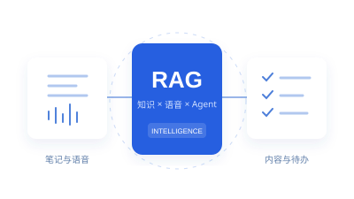

KNOWLEDGE → INTELLIGENCE

技术路径示意多维增效的 AI 笔记
让笔记从信息记录，走向知识生成、分角色对话与待办管理。
我的贡献
构建词向量知识库，接入大模型检索增强；结合 pyannote-audio 与 emotion2Vec，实现说话人分离和情感分析；搭建 Agent 工作流。
国家级二等奖 · 省级一等奖 · 专利
查看项目细节
问题与方案
围绕笔记内容生成、多人语音理解和待办分类，结合外部知识检索与语音分析，扩展传统笔记工具的能力。
技术路径
笔记 / 语音输入 → 知识检索与模型处理 → 内容生成、角色信息与待办组织。
职责边界
重点负责知识库、检索增强、语音分析模型组合与 Agent 工作流。Flask 与 uni-app 为项目使用的整体技术栈。